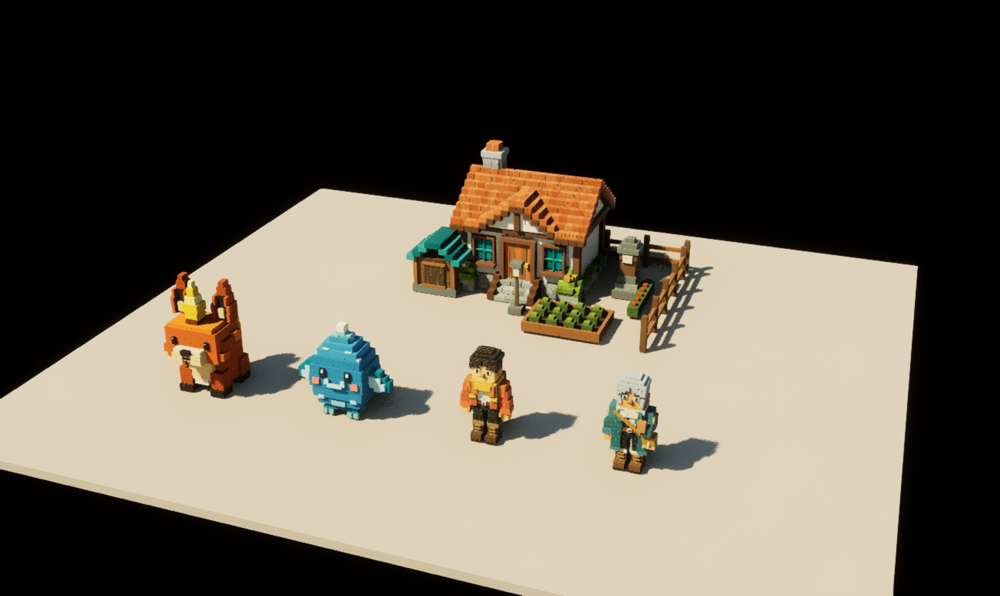
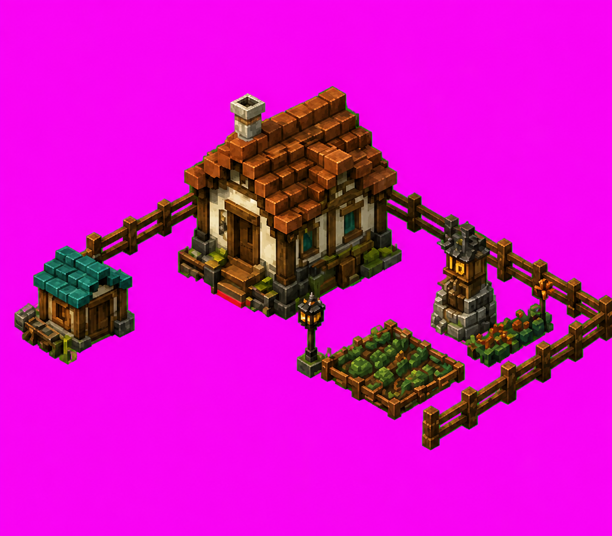
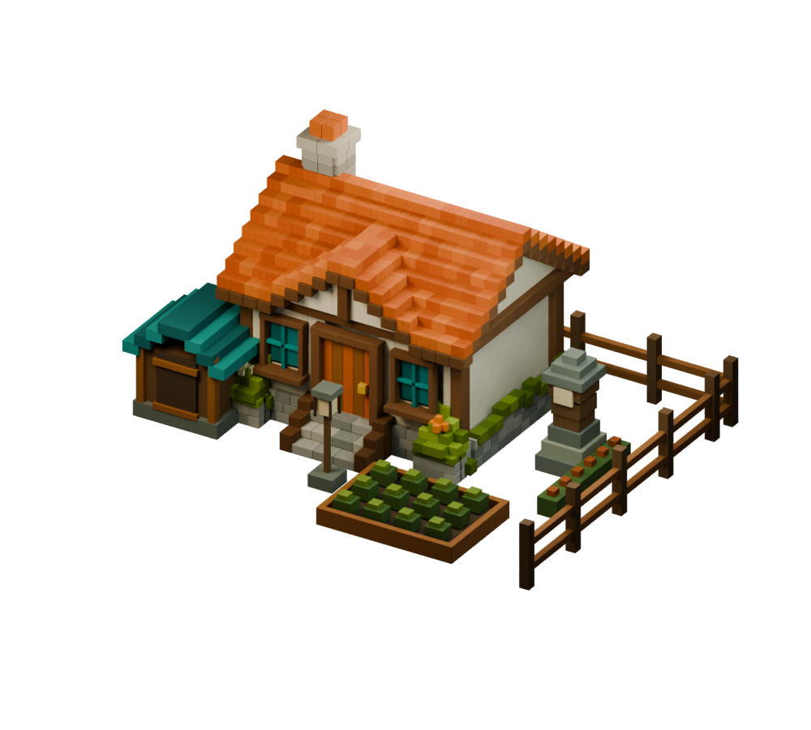
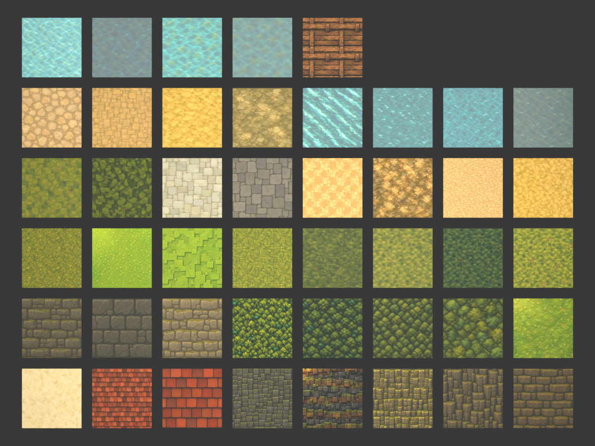
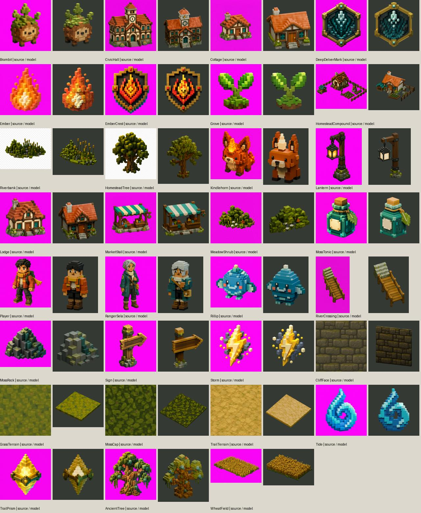

Remaining Terrarium models — authored and imported
Five new primary models, 45 material alternatives, and explicit coverage of all 77 source PNGs. Fidelity remains unapproved. Characters are static, with no delivered rig or animation.
Unreal review map
/Game/Terrarium/Blender/Maps/RemainingModelsReview. Original HomesteadBlender map is unchanged.

Kindlehorn
Tall upright ears, central emissive horn, cream muzzle/chest, dark hooves and rear flame tail are present. The head is squarer, ear recesses flatter and horn less tapered than the source; subtle ember particles are omitted.
1028 editable parts · 111,024 triangles · Blender file
Rillip
Closed stepped body, mint fins/toes, blush, smile and crown tip are present. Body layers were repaired to overlap. The silhouette is more pyramidal and less rounded than the source; foam placement remains approximate.
902 editable parts · 97,416 triangles · Blender file
Player
Front and back references share one physical model, including orange jacket, gold scarf, green backpack with pockets/buckles, boots and face. Body stance, head/hair volume and scarf silhouette are simplified. A rear render verifies the equipment. Atlas poses are references only.
1345 editable parts · 145,260 triangles · Blender file
RangerSela
Teal long coat, cream scarf, silver hair, shoulder insignia, diagonal strap and ochre satchel are present. Hair, face, tailoring and stance remain simplified; unseen rear details are inferred. The pose atlas is retained as reference only.
1427 editable parts · 154,116 triangles · Blender file
HomesteadCompound


Existing editable Cottage geometry/material is reused, with new shed, fence, planted bed, lamppost, shrine and flowerbed. Arrangement is a first-pass adaptation, with a larger cottage footprint and simpler plants/stonework than the source. The open courtyard uses real empty space; no object-image billboards.
4039 editable parts · 436,212 triangles · Blender file
Material alternatives
45 packed source surface images, Blender materials and physical sample slabs, imported as 45 Unreal materials/textures and samples. Water is an opaque appearance sample, not a water simulation. Revisions remain alternatives; world assignments are unchanged.

Collection comparison
One contact-sheet review of existing previews. Broad silhouettes and material identity were inspected; no full-collection rerender or fidelity acceptance was performed.
